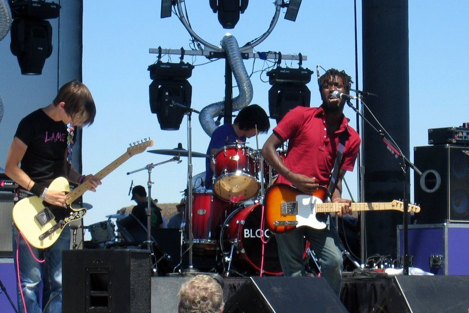

Triple J picks its Bloc Party remix winner



National broadcaster Triple J received over 1,000 responses to its invitation for bedroom producers around the country to have a crack at remixing a Bloc Party track, and 24 year old Nathan Liow from Melbourne has taken home the prize.
Nathan apparently locked himself in his room for five days to get the track completed, and even the band themselves were impressed with his efforts. He’s won himself the chance to meet Bloc Party and watch their concert from backstage when they tour in a couple of weeks, as well as a signed block mount and a pack full of other.
Have a listen to the winning entry HERE and check out some of the other impressive entries at triplejunearthed.com.